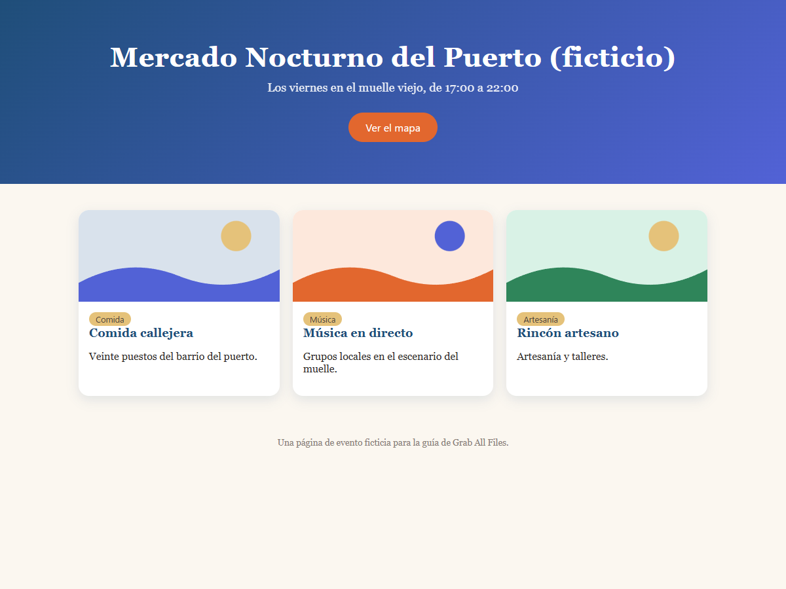

Resultado real de Grab All Files
Una página guardada como HTML con su diseño original (Gratis)
Una página de evento ficticia con colores y diseño de tarjetas, guardada como un solo archivo HTML que conserva el aspecto original. Las imágenes se almacenan dentro del archivo, por lo que se ve sin conexión. El grado de fidelidad de la reproducción depende de cómo esté construida la página.
Archivos generados
Lado a lado, con el mismo ancho de ventana

Cómo se hizo
- Página de origen
- /samples/source/es/night-market/
- Extensión
- Grab All Files 5.8.31
- Navegador
- Chrome 156.0.8078.48 (Windows 11)
- Plan
- Gratis
- Fecha
- 2026-10-28
- Ajustes
- Páginas: solo la página actual
- Aspecto: Mantener el aspecto original
- Imágenes: Guardar sin conexión (predeterminado)